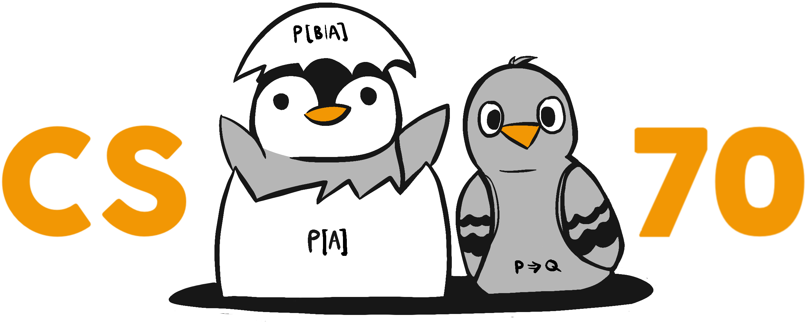

|
Samantha Huang Hi! I am a software developer based in the Bay Area and currently working at Bio-Rad Laboratories . In my free time, I enjoy learning to cook, playing badminton with friends, and drawing whenever I get the chance.I recently graduated from UC Berkeley , where I double majored in Computer Science and Data Science . ʕ •ᴥ•ʔ Go Bears! Please feel free to send me an email to chat! |
{kind=link}
Latest Updates✿ 01/07/25: Started my full-time 9 month role as a Software Developer at Bio-Rad Laboratories ✿ 12/27/24: Wrapped up my Software Engineer internship at Bio-Rad Laboratories with a final presentation ✿ 12/21/24: Graduated from UC Berkeley ʕっ•ᴥ•ʔっ ᕦʕ •`ᴥ•´ʔᕤ ✿ 12/20/24: Proctored and scanned CS 188 Final for the last time ✿ 12/03/24: Presented on the experiments we conducted for the Searchabale Content Database project |
Industry |
|
|
Bio-Rad Laboratories
Software Developer Developing the backend of an internal application that will transition the workflow of Excel workbooks to an AWS hosted website |
|
|
Bio-Rad Laboratories
Software Engineer Intern Working on an internal tool that will organize data related to potential critical points of failure Maintaining and adding features to internal tool that automatically creates/upload issue tickets |
ResearchI am interested in making CS education more accessible for everyone no matter their background/experience level. |
|
|
Searchable Content Database
Rebecca Dang, Samantha Huang, Jessica Lin (Gireeja Ranade, Narges Norouzi) We have conducted experiments using different LLM to determine which one worked best for organizing course problem databases into course specific topics. We have released a CLI called findprob which can be used now! Feel free to check it out! |
|
|
CS Illustrated
Samantha Huang, Jason Lee (Dan Garcia) The goal of CS Illustrated is to make CS topics more accessible to students through visually pleasing and accurate visualizations. This semester, we will be focusing on creating illustrations to simplify how LLMs have evolved to what they are today. |
Teaching |

|
CS 188: Introduction to Artificial Intelligence
Teaching Assistant, Fall 2024 (Pieter Abbeel, Igor Mordatch) Teaching Assistant, Summer 2024 (Eve Fleisig, Evgeny Pobachienko) Teaching Assistant, Spring 2024 (Cameron Allen, Michael Cohen) Tutor, Fall 2023 (Igor Mordatch, Peyrin Kao) Tutor, Summer 2023 (Nicholas Tomlin, Saagar Sanghavi) |
|  |
CS 70: Discrete Mathematics and Probability Theory
Academic Intern, Spring 2023 (Babak Ayazifar, Satish Rao) |
ServiceI mentored and taught CS to students from all backgrounds of life. |
|
Computer Science Mentors
CS 70 Coordinator, Fall 2024 CS 70 Coordinator, Spring 2024 Full Stack Developer, Spring 2024 - Present Senior Mentor, Fall 2023 Senior Mentor, Spring 2023 Junior Mentor, Fall 2023 |
|
|
Association of Women in EE & CS
Mentor, Fall 2024 |
|
|
Society of Women Engineers - SWE++
Committee Member, Spring 2023 |
|
|